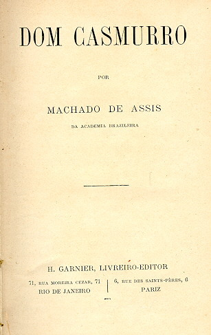

Uma história marcante para conhecer antes de levar à sua estante.

LITERATURA BRASILEIRA
Dom Casmurro
Machado de Assis
GÊNERO Romance
Realismo brasileiro
PUBLICAÇÃO 1899
PÁGINAS Não informado
Edição de referência
Entre as lembranças de Bentinho e sua relação com Capitu, um
clássico que convida o leitor a questionar a memória, o ciúme e as
diferentes versões de uma mesma história.
Depois de adicionar, você poderá iniciar a leitura.
Sinopse
Bento Santiago recorda a juventude e o amor por Capitu, amiga de
infância com quem constrói uma vida marcada por afetos, expectativas
e suspeitas. Narrada a partir de suas memórias, a história desafia
certezas e deixa ao leitor a tarefa de interpretar o que realmente
ocorreu.
Uma história para descobrir. Um lugar para acompanhar.
Descubra. Organize. Leia.